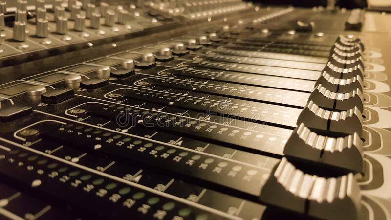

Master of the Mix.
Expert Engineering
Experience more than sound
Untitled
What do you get when you cross dark heavy riffs with melodic
cadences, influences from metal, rap and more genres? You get
the new untitled EP by up and coming Artist/Producer Kaysea
Explore my Services
I have a unique approach to what I do and use my best-in-class technology to carry out my artistic vision. Using a mix of old-school and
modern equipment, Kieran Cairns is all about creating new sounds that evoke emotion with every beat. From video work to music, and
everything in between, I'll take responsibility for your unique sound needs. Get in touch and lets talk about your next project.
Music Mastering
Final Touches

